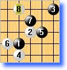

《博弈规则》 1-博弈规则测试版1.0
#1 《博弈规则》 1-博弈规则测试版1.0 作者：有志青年 发表时间：2007-11-28 16:44:51
总目录【主题贴】 《博弈规则》正式版1.1 ShowPost.asp?ThreadID=3005
2007．11．27
博弈规则测试版：
1) A方落任意3子，B方选择是否交换。
2) 从第4手至第10手，任一方除直接落子外；还可以连续落2子，但之后对方拥有选择权（可以选择持黑持白）。
（注：①博弈规则可用于有禁也可以是无禁，这里以无禁为例。②选择权=交换权）
模拟：
A方开局，B方考虑选择持黑还是持白；假定B方交换，则A方持白先行
A方希望下这个4但又对其他5不熟，可以连续落2子即4、5手，然后B方考虑选择黑还是白；
假设B方不交换，那么A方持白下第6手；B方可以直接落7手，或者连续落2手；

B发现白6强劲，黑7不知道落哪好，B方可以连续落2子即7、8手，(若A不交换，B盘算9下6左上平衡)，然后A方考虑持黑持白；
A方最终觉得还是白比较好，可以不交换继续持白；如此B按照自己原本设想下9手，争取局面平衡；
A这时同样2种选择，直接落10或者连续落2子；由于考虑到现在局势趋于明朗，落2子后B可以选择持黑持白，因此若再落2子的话不但自己有落平衡的2手的压力，同时给B方也比较容易选对更优势的一方；因此A方直接落10手为上策。
10手后按照正常思路行棋，黑11落8下面，之后局面相对平衡，双方混战。
博弈规则测试版常见问题：
1， 博弈规则从4手开始即可以直接落子，又可以连续落2子，还涉及选择交换，是不是太复杂啦？
答：应该说字面上是比较复杂，但落实到棋手行棋思路上，并不复杂。因为：
①“连续落２子”，这是博弈规则给棋手的一种手段、权力，但是否使用完全取决于棋手，是完全自愿的； 若觉得复杂不适应那么不使用该手段权力，按照自己的原本思路行棋即可。(双方都不使用时候接近单纯无禁手规则)
②“不使用该手段权力，按照自己思路行棋”不必因此付出任何代价。因为该规则３手存在一次选择权，因此单纯技术上３手已经是平衡的啦（棋手行棋导致不平衡不能归咎于规则）。如此，无论任何一方不使用该手段权力，依然可以按正常思路行棋。
③博弈规则行棋动机上变化小：单纯的无禁手规则下，行棋思路总是争取下最强手，而博弈规则与此非常接近。这个需要相对其他平衡无禁规则说明：
2次交换：4，5手两次交换。该规则为了顾虑变化量及平衡性，必然要求至少2次的交换。如此必然导致4，5手行棋思路上与正常行棋动机冲突，（不是追求下最强，否则要受到规则的惩罚）。而博弈规则只需要第3手时候一次交换，与行棋动机冲突较小，而且事实上第3手下随意一点影响也不大。(下文说明)
SAKATA类：一方连续落2子，对方有选择权。博弈规则跟SAKATA规则这点是类似的，区别在于SAKATA 是强迫一方下弱手，而博弈规则是否使用及何时使用都是自愿的。因此博弈规则下出现这种“下弱手”是棋手自愿行为，另外博弈规则何时“下弱手”也是自愿的，棋手完全可以自主地把握使用最佳时机。 综上，虽然看起来博弈规则复杂，但实际对局可以发现该规则与普通无禁手规则行棋思路上并没有太多出入。也就刚接触理解上不适应，就如用惯Windows98突然改用XP那般。

2，博弈规则4~10手开始有“连续落2子”的权力，那么双方一共可以使用3~4次，这样感觉很混乱麻烦？
答：应该说这种情况确实存在，但一般不多见。因为“连续落2子，对方拥有选择权”这种权力实际上多是种负担，麻烦。 （该权力源于Sakata，因此该性质跟Sakata一致）
为什么说该权力实际上多是负担、麻烦呢？
因为在没有研究的情况下，“连续落2手”的一方付出的代价比较大，“考虑选择交换”的一方付出的代价比较小。前者成本明显
#2 Re:博弈规则测试版 作者：『五目』棋癫 发表时间：2007-11-30 19:27:30
看完了,该规则非常不错,阐述非常系统全面.
#3 Re:《博弈规则》 1-博弈规则测试版1.0 作者：月下舞剑者 发表时间：2008-3-2 17:30:52
谢谢这位老师，很感谢您~~~